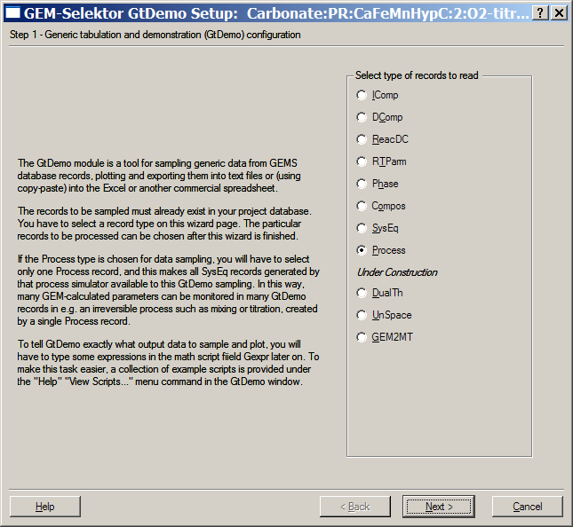

Previous Page Back to Start Page
(26) How to create a GtDemo data
sampler
and plotter.
The Process
simulation
(described previously) has generated 51 SysEq records that are now
stored
in the project database under keys starting from "Carbonat:G:CaFeMnHypC:1000:0:1:25:0:" and ending with "Carbonat:G:CaFeMnHypC:1500:0:1:25:0:". Only 5 parameters -
a
small fraction of scores of results per equilirium point - have been
sampled
and plotted in the Process simulator as function of addition of O2
to the bulk composition of the "parent" system.
However, it is always possible to re-sample these SysEq records and plot other results without re-running the Process simulation. For this purpose (and many others), a GtDemo data sampler can be created, configured and saved as a record in your project database.
Switch to the "Gibbs energy minimization project" dialog and click there on the "Data Sampling and Plotting (GtDemo)" button to open the (still empty) GtDemo window. There, execute the "Record" "Create" menu command. A small record key dialog will appear (with asterisks in all but the first field). As usual in GEM-Selektor, a new GtDemo record key is to be greated. We recommend the form shown below.
The first field is always the modelling project name. The second field
tells
the program to sample data generated by a Process simulator. Third
field
should usually contain the name of the "parent" system; likewise, the
fourth
field contains its CSD variant number. The last field should tell what
sort
of data will be sampled and plotted (fugacities of gases in this case).
Enter
the fields as shown and press "Ok" to enter the GtDemo Setup wizard.

Select "Process" as type of records to read, as shown above; then click "Next >". In the appearing page, set the number of plots to 3, as shown below:
Click "Next >" to
proceed. Read the wizard page; make sure that the Process record
template is set to "*" (any key) and then click "Finish". A list of available
Process
records for choosing which one to sample shall appear; just press "Ok",
as
there is only one such record in the project database.
This will bring you to a
dialog
displaying a list of all SysEq records generated by the selected
Process
simulation ("parent" SysEq record is not shown because it has not been
modified
or generated by the Process simulator):
Click on the "Select All"
button
to select all SysEq records from the list (you can also mark only part
of
record keys, in which case all non-selected SysEq records will be
skipped
from sampling and plotting). Press "Ok" to proceed. You will get back
to
Page 1 of the GtDemo window.
What remains is to type in
the
names of X and Y axis and three names of plot lines, as well as to
provide
a data sampling math script in a similar way as we did it with Process
simulator
data sampling math script. Access the "Template script
library"
using the "Help" "Scripts..." menu command or the F3
keystroke. You will get the following dialog:
Select a suitable template script for sampling parameters of solutions
or gases, as shown above, and press "Ok". This will open a SDref
window,
where you can find the necessary template script on Page 2 (scroll the
text
to the bottom as shown below).
Mark the
script
(with left mouse key pressed) as shown above, and press Ctrl-C
to take it into clipboard.
Switch to Page 1 of the GtDemo window, click on the big G_expr
field and press Ctrl-V to paste the text
there.
Now you have to edit the first operator only: replace the line x0[jR]
=: b[{C}]; by x0[jR] =: modC[jR];
because we want to plot partial fugacities of gases against
additions
of O2 (in grams), as in the Process graphs.
Change also names of axii and of the plot lines accordingly. Fill out
the comment lines. The final appearance
of Page 1 should be like this:
Our GtDemo data sampler is now ready to be calculated!